Genesis Studio 知识库逐页操作手册
这份页面只讲进入一个知识库以后的页面操作。适合新用户逐页学习， 也适合培训时按“页面作用、从上到下、典型操作、下一步去哪里”的顺序讲解。
目录
- 知识库内导航怎么理解
- 内容管理
- 索引配置
- 执行索引
- 摘要与示例提问
- 检索配置与问答
- 结构化检索、提示词、分享中心、导出和 AI 代理
- 逐页培训推荐顺序
知识库内导航怎么理解
进入知识库后，顶部通常会看到一组操作导航。它们可以理解成知识库内部的工作台目录。
常见页面包括问答、结构化检索、摘要与示例提问、检索配置、执行索引、内容管理、索引配置、提示词、AI 代理、分享中心和导出。
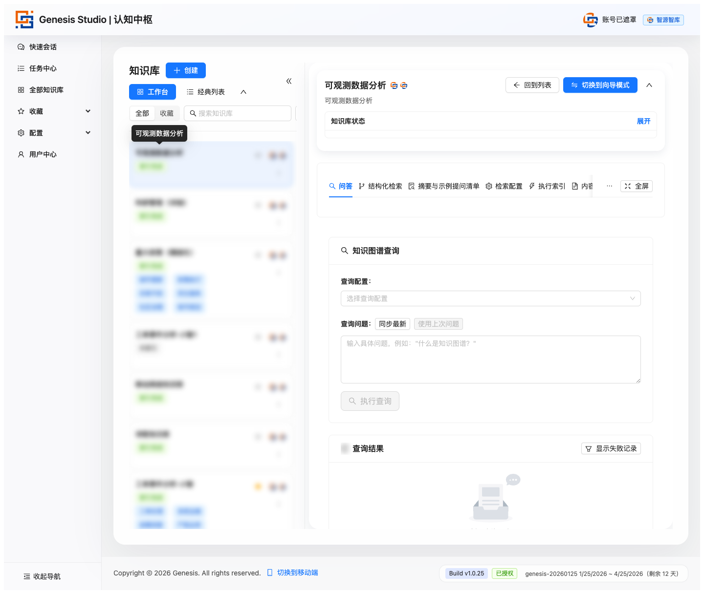
内容管理
内容管理负责上传文件、导入网页、查看文档状态、处理提取结果。它是资料进入知识库的入口。
从上到下看页面
- 文件导入：拖拽上传文件，选择导入模式。
- 网页导入：输入链接，发起网页导入任务。
- 文档列表：查看文件名、状态、上传时间、批量操作、预览、删除和参数调整。
- 任务区：查看提取任务和网页导入任务。
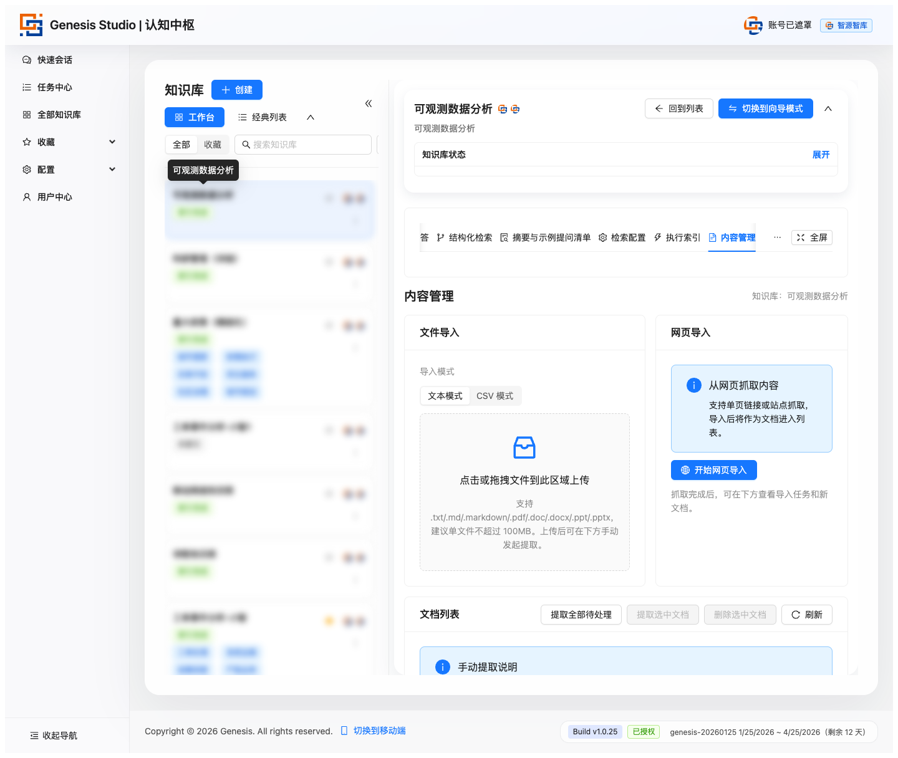
索引配置
索引配置负责定义平台如何处理内容。这里不是普通表单，而是知识库的内容生产规则。
从上到下看页面
- 配置列表：查看已有配置、新建配置、编辑配置、删除配置。
- 新建或编辑配置：填写基础信息、模型、提示词绑定、实体类型、运行时设置和高级设置。
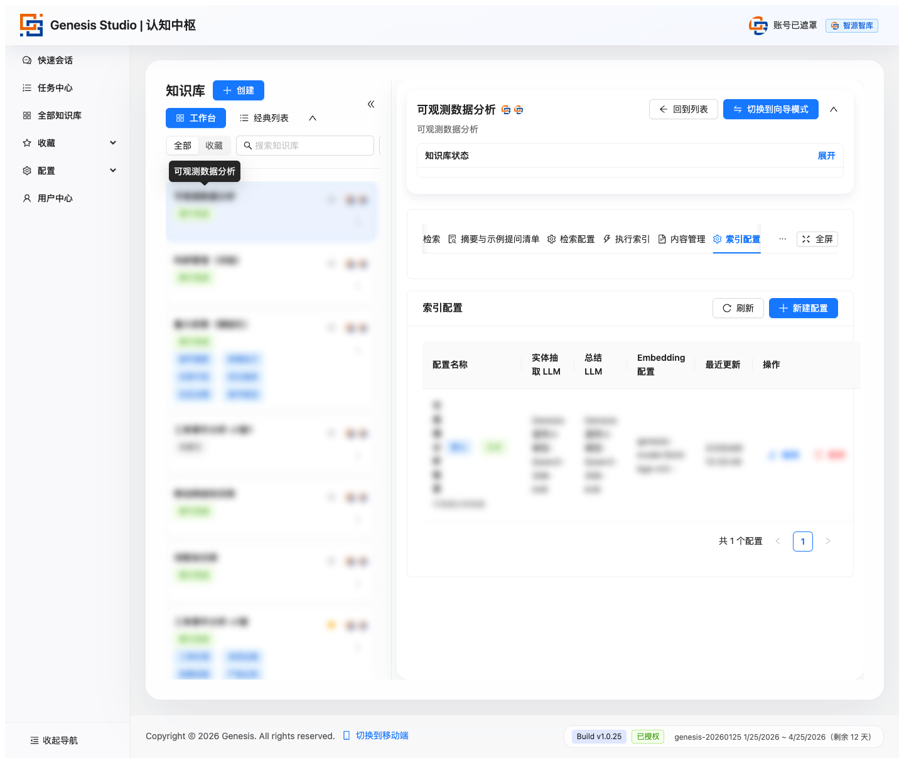
执行索引
执行索引负责真正启动知识能力建设。只有完成索引后，知识库才具备后续问答和检索能力。
从上到下看页面
- 索引统计概览：观察当前成果。
- 选择文档：决定这次要处理哪些文档。
- 更新索引：选择索引配置、版本策略、版本标签，并启动更新。
- 当前任务进度：索引开始后重点观察这里。
- 索引版本和任务历史：查看不同版本结果和过往执行记录。
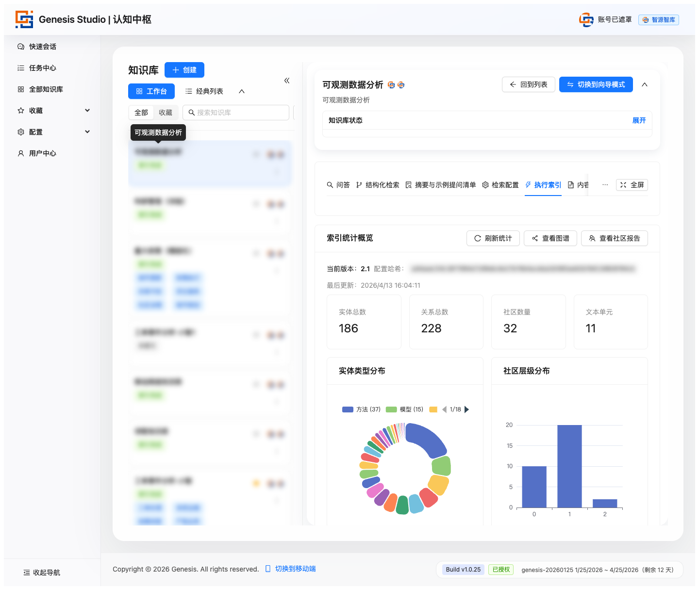
摘要与示例提问
摘要与示例提问帮助用户快速理解知识库内容范围和提问方式。它适合放在正式提问之前。
从上到下看页面
- 知识库标签：查看、修改或生成标签。
- 自动摘要与示例提问：生成面向用户的理解材料。
- 全局摘要：理解这个知识库主要讲什么。
- 示例提问清单：理解这个知识库适合怎么问。
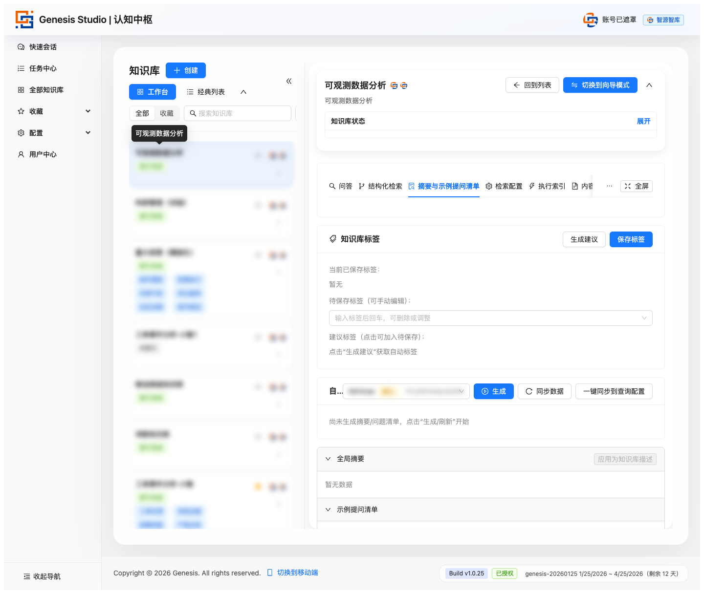
检索配置与问答
检索配置负责定义问答时的规则，包括新建检索配置、选择查询方式、设置默认配置和统一问答风格。
问答页是用户真正获取结果的主页面。用户通常按输入问题、选择配置、提交查询、看答案、看历史、做追问或分享的顺序操作。
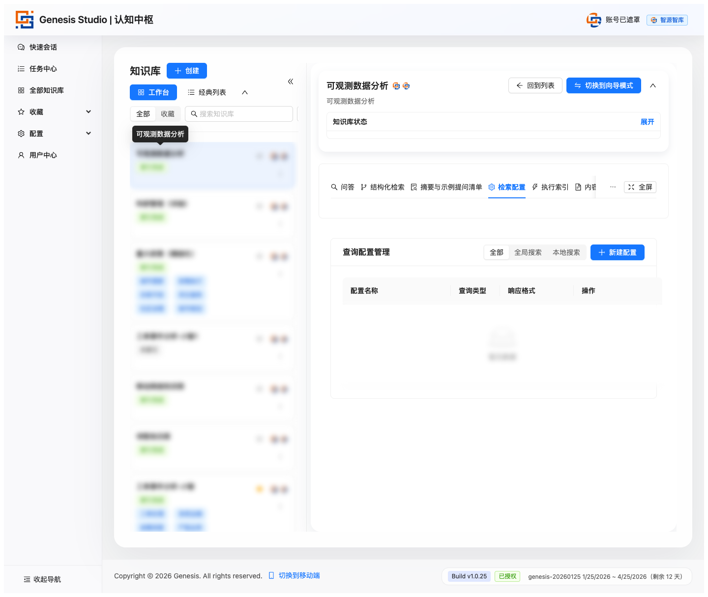

结构化检索、提示词、分享中心、导出和 AI 代理
结构化检索更适合分析型场景，重点看查询模式、检索参数、证据表格、路径说明和 Chunk 正文。
提示词页负责控制知识库在不同环节的表达和处理方式，常见操作是查看、预览、编辑、清空或替换提示词。
分享中心负责管理知识库可见性和传播范围，重点看分享概览、当前可见性、分享策略和审计记录。
导出页负责把知识库内容和能力打包带走，通常包括导出说明、内容范围选择、生成导出包和导出任务列表。
AI 代理属于扩展型能力，更适合在基础知识库已经稳定后再讲清楚适用人群、使用前置条件和它与问答页的区别。
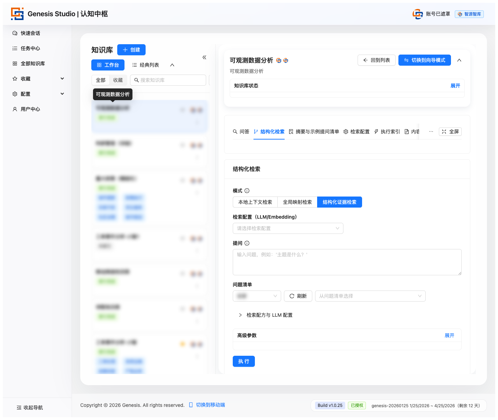
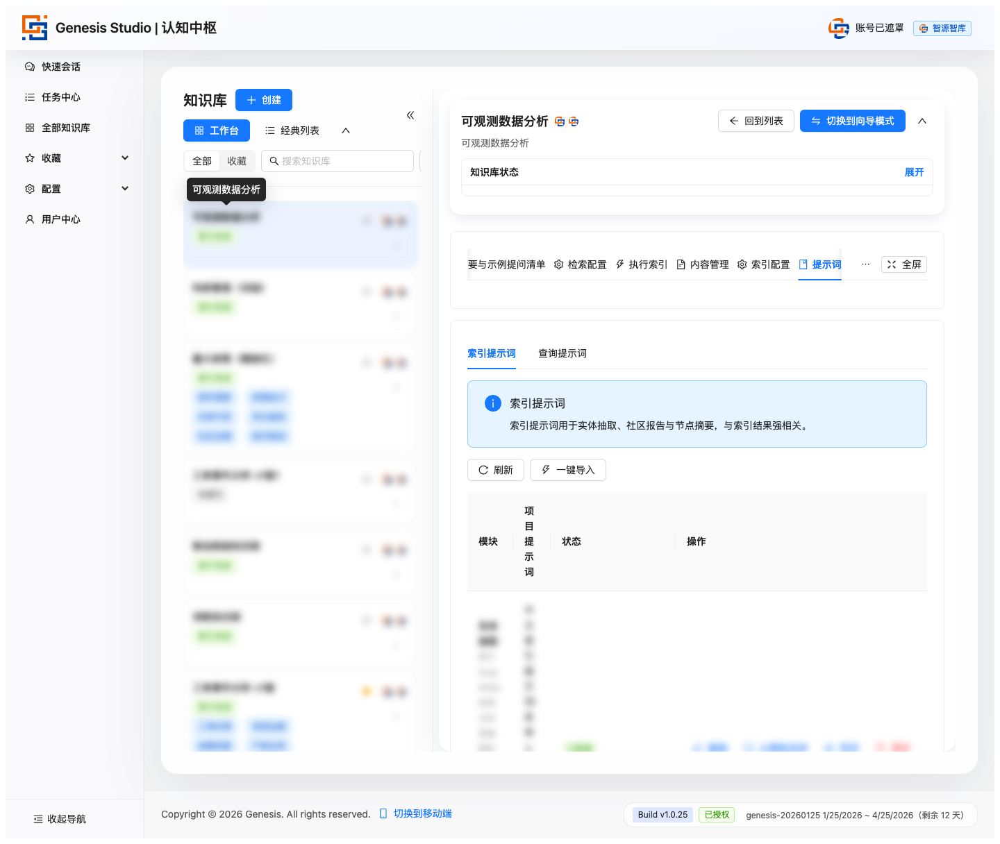
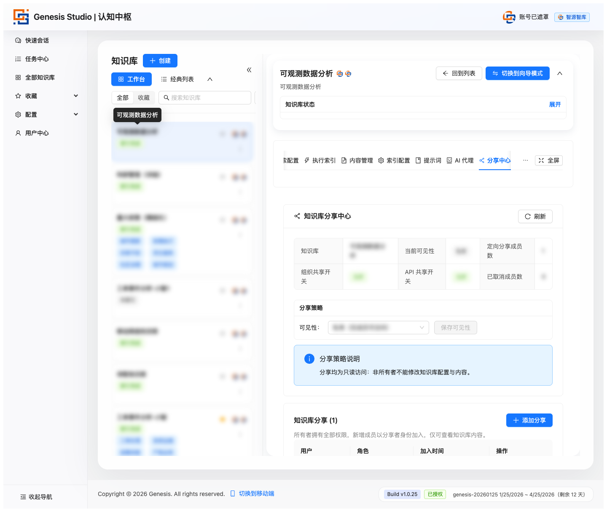
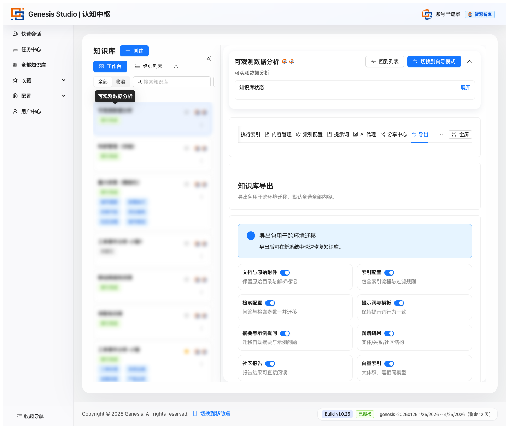
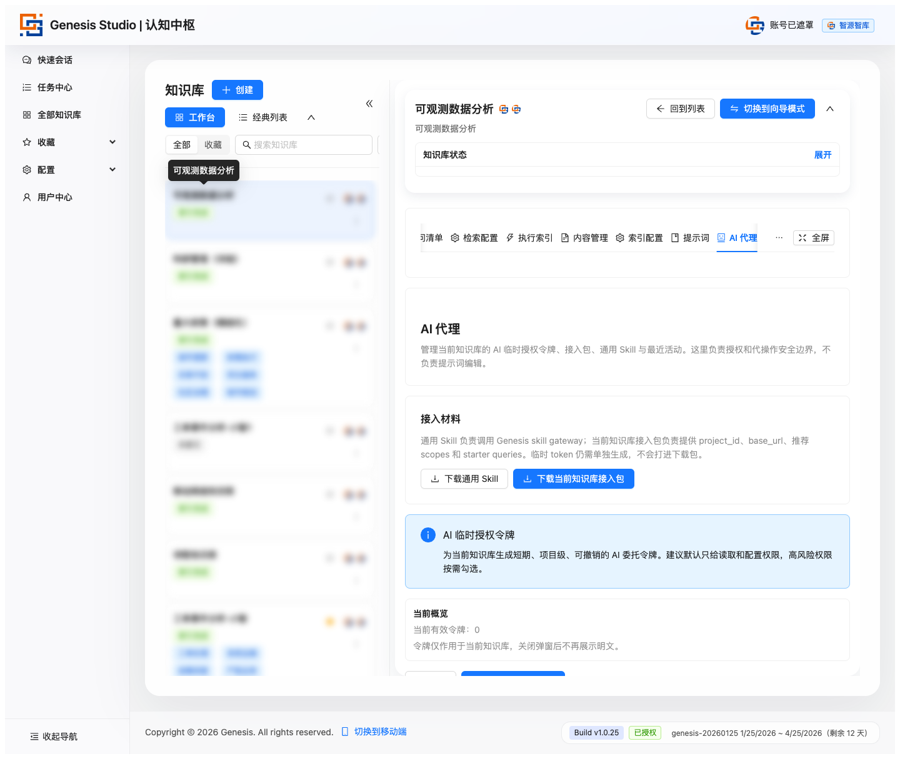
逐页培训推荐顺序
给新用户逐页培训时，建议不要完全按导航原始顺序讲，而按“从准备到使用再到治理”的链路讲。
- 内容管理
- 索引配置
- 执行索引
- 摘要与示例提问
- 检索配置
- 问答
- 结构化检索
- 提示词
- 分享中心
- 导出
知识库内页面不是一组平行菜单，而是一条连续工作流：先导内容，再设规则，再跑索引，再辅助理解，再发起问答，最后共享和治理。